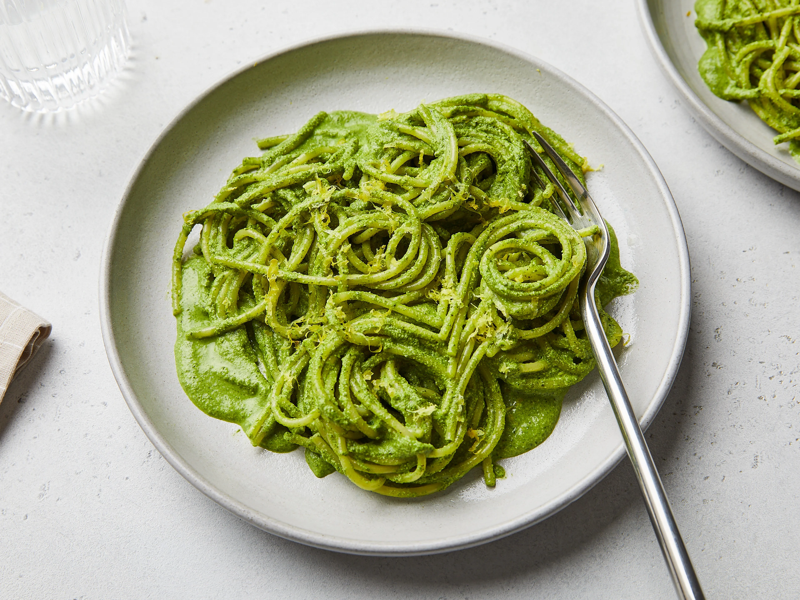

Pesto pasta recipe

Description
Cooking pesto pasta is a labor of love, but the end result is always
worth it. Here's a condensed guide to crafting this classic dish:
Ingredients
- Pasta (such as spaghetti or penne)
- Fresh basil leaves
- Pine nuts or walnuts
- Garlic cloves
- Parmesan cheese
- Extra-virgin olive oil
- Salt and pepper to taste
Cooking steps
- Cook pasta according to package instructions until al dente.
- While pasta cooks, blend fresh basil, pine nuts, garlic,
Parmesan cheese, and olive oil in a food processor to make the pesto sauce.
- Drain pasta and return it to the pot.
- Mix in the pesto sauce until pasta is evenly coated.
- Season with salt and pepper to taste.
- Serve hot, optionally garnished with additional Parmesan cheese or fresh basil leaves.
Enjoy your flavorful pesto pasta!